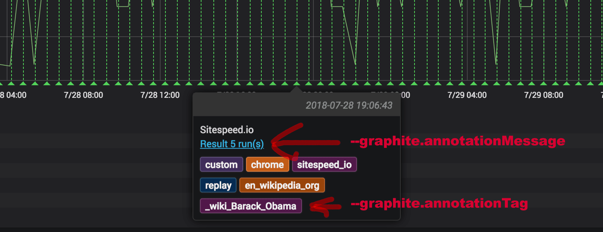
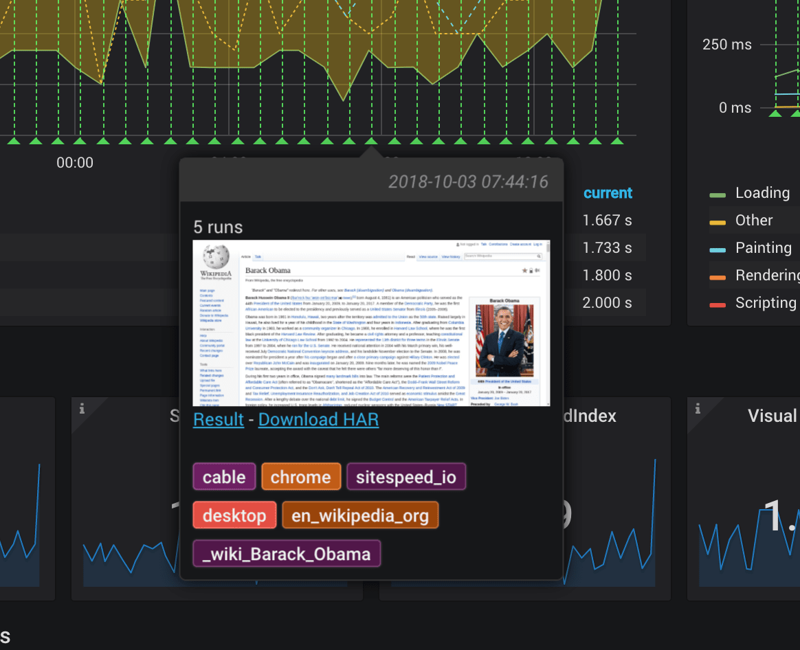
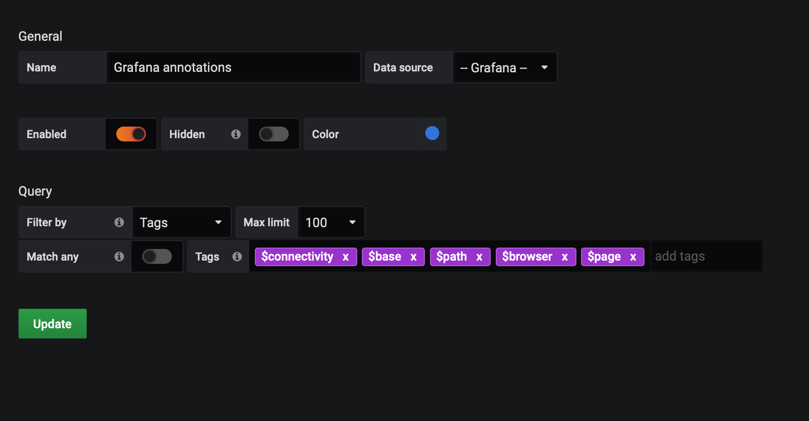
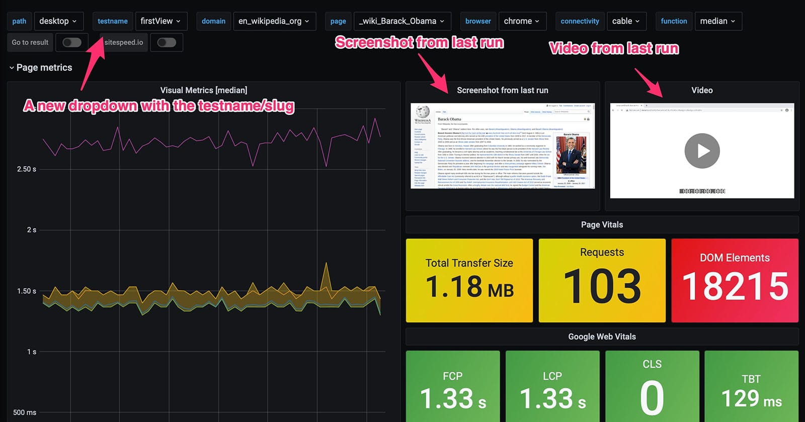
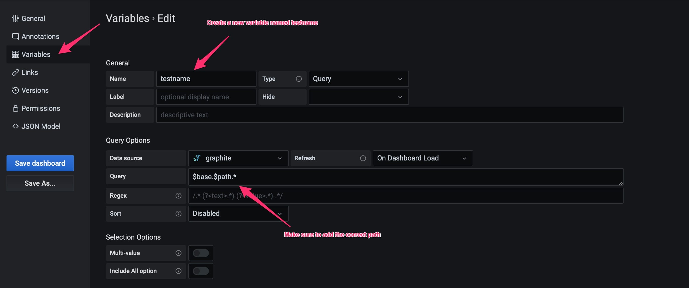
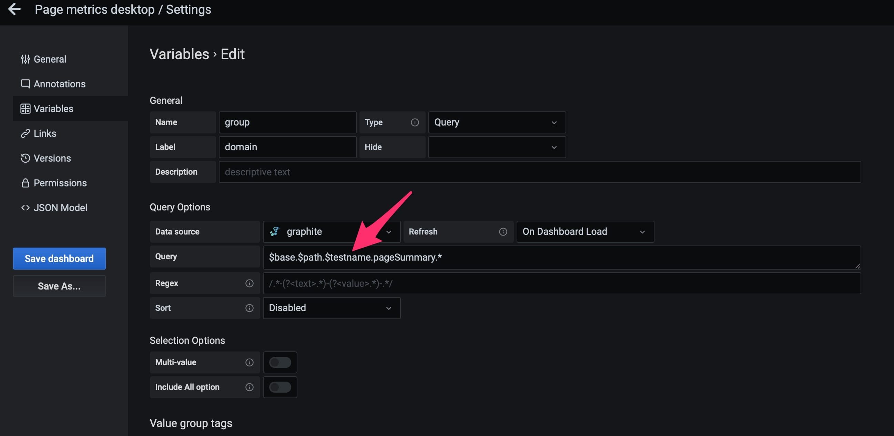
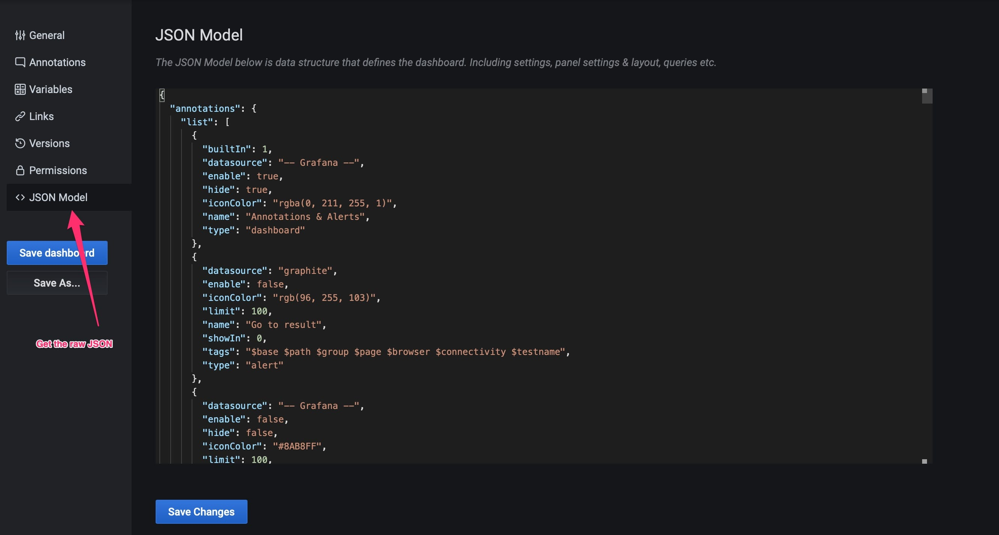
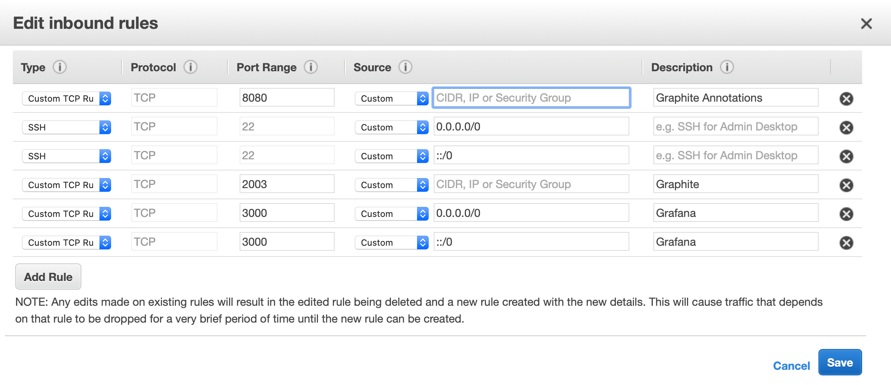
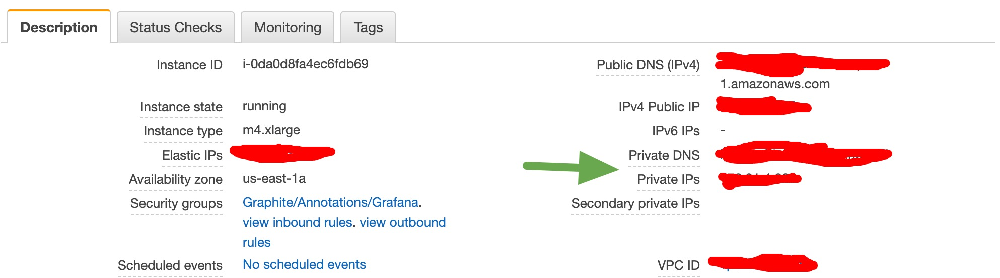
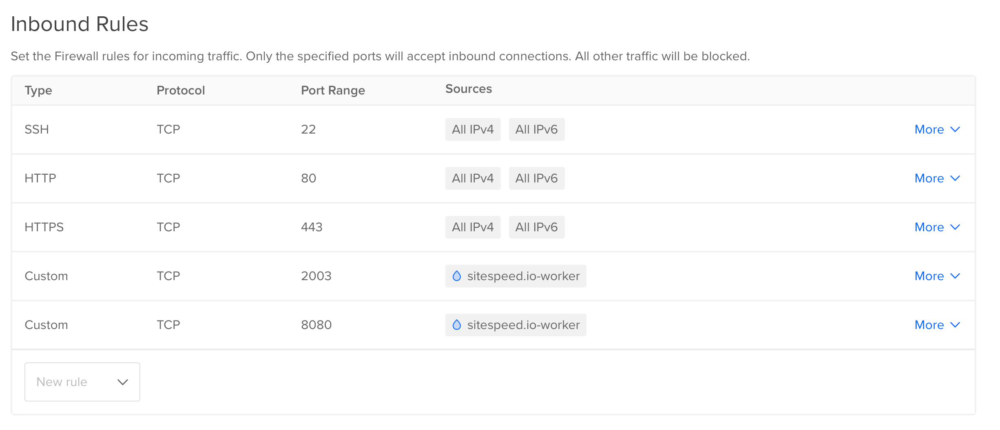

Documentation / Graphite
Graphite
- What is Graphite
- Before you start
- Configure Graphite
- Send metrics to Graphite
- Upgrade to use the test slug in the namespace
- Dashboards
- Namespace
- Delete old tags/annotations
- Warning: Crawling and Graphite
- Statsd
- Secure your instance
- Storing the data
- Graphite for production (important!)
What is Graphite #
Graphite store numeric time-series data and you can use that to store the metrics sitespeed.io collects. We provide an easy integration and you can use our pre-made Docker container and our dashboard setup or use your current Graphite setup.
Before you start #
If you are a new user of Graphite you need to read Etsys write up about Graphite so you have an understanding of how the data is stored and how to configure the metrics. Also read Graphite docs how to get metrics into graphite for a better understanding of the metrics structure.
In Graphite you configure for how long time you want to store metrics and at what precision, so it’s good to check our default configuration (this and this) before you start so you see that it matches your needs.
Configure Graphite #
We provide an example Graphite Docker container and when you put that into production, you need to change the configuration. The configuration depends on how often you want to run your tests. How long you want to keep the result, and how much disk space you want to use.
Starting from sitespeed.io version 4 we send a moderated number of metrics per URL but you can change that yourself.
When you store metrics for a URL in Graphite, you decide from the beginning how long and how often you want to store the data, in storage-schemas.conf. In our example Graphite setup, every key under sitespeed_io is caught by the configuration in storage-schemas.conf that looks like:
[sitespeed]
pattern = ^sitespeed_io\.
retentions = 30m:40d
Every metric that is sent to Graphite following the pattern (the namespace starting with sitespeed_io), Graphite prepares storage for it every ten minutes the first 40 days.
Depending on how often you run your analysis, you may want to change the storage-schemas.conf. With the current configuration, if you analyse the same URL within 10 minutes, one of the runs will be discarded. But if you know you only run once an hour, you could increase the setting. Statsd has some really good documentation on how to configure Graphite.
In this example with retention of 10 minutes, the metrics you will send will be in Graphite with a 10 minute interval. If you have a larger interval for example one hour and send annotations on specific seconds, you can then see a larger miss match between the annotation and when the actual metric got into Graphite. If you are sending metrics to Graphite on a per iteration basis the subsequent runs may be discarded as they arrive within the time frame. Below is an example taking in closer to real-time metrics and falling back to the default retentions.
[sitespeed_iterations]
pattern = run-\d+\.
retentions = 10s:6h,10m:60d,30m:90d
Another example is if wanna use the Crux plugin to collect Crux data once day. And then you want to store that data for one year. Setup a pattern that match the Crux data and configure the retention.
[sitespeed_crux]
pattern = ^sitespeed_io\.crux\.
retentions = 1d:1y
One thing to know if you change your Graphite configuration: “Any existing metrics created will not automatically adopt the new schema. You must use whisper-resize.py to modify the metrics to the new schema. The other option is to delete existing whisper files (/opt/graphite/storage/whisper) and restart carbon-cache.py for the files to get recreated again.”
Send metrics to Graphite #
To send metrics to Graphite you need to at least configure the Graphite host: --graphite.host.
If you don’t run Graphite on default port you can change that to by --graphite.port.
If your instance is behind authentication you can use --graphite.auth with the format user:password.
If you use a specifc port for the user interface (and where we send the annotations) you can change that with --graphite.httpPort.
If you use a different web host for Graphite than your default host, you can change that with --graphite.webHost. If you don’t use a specific web host, the default domain will be used.
You can choose the namespace where sitespeed.io will publish the metrics. Default is sitespeed_io.default. Change it with --graphite.namespace. If you want all default dashboards to work, it need to be 2 steps and include a slug.
Each URL is by default split into domain and the URL when we send it to Graphite. By default sitespeed.io remove query parameters from the URL bit if you need them you can change that by adding --graphite.includeQueryParams.
If you want metrics from each iteration you can use --graphite.perIteration. Using this will give raw metrics that are not aggregated (min, max, median, mean).
If you use Graphite < 1.0 you need to make sure the tags in the annotations follow the old format, you do that by adding --graphite.arrayTags.
You can choose to send metric per par page and summarized per domain. If you only test a couple of URLs you probably do not need the summarized per domain metrics and you can disable them by adding --graphite.skipSummary.
You can add the slug of the test to the key (--slug). This will be the default in September 2021 and you should start using it now to be able to see screenshots and latest videos directly in Grafana. Use it like this: --graphite.addSlugToKey true --slug firstView --graphite.namespace sitespeed_io.desktop and it will generate the key structure of sitespeed_io.desktop.firstView..
Debug #
If you want to test and verify what the metrics looks like that you send to Graphite you can use tools/tcp-server.js to verify what it looks like.
- Start the server (you need to clone the sitespeed.io repo first):
tools/tcp-server.js - You will then get back the port for the server (60447 in this example):
Server listening on :::60447 - Open another terminal and run sitespeed.io and send the metrics to the tcp-server (read how to reach localhost from Docker):
docker run --shm-size=1g --rm -v "$(pwd):/sitespeed.io" sitespeedio/sitespeed.io:38.6.0 https://www.sitespeed.io/ --graphite.host 192.168.65.2 --graphite.port 60447 -n 1 --graphite.addSlugToKey true --slug firstView - Check the terminal where you have the TCP server running and you will see something like:
sitespeed_io.default.firstView.pageSummary.www_sitespeed_io._.chrome.native.browsertime.statistics.timings.pageTimings.backEndTime.median 231 1532591185
sitespeed_io.default.firstView.pageSummary.www_sitespeed_io._.chrome.native.browsertime.statistics.timings.pageTimings.backEndTime.mean 231 1532591185
sitespeed_io.default.firstView.pageSummary.www_sitespeed_io._.chrome.native.browsertime.statistics.timings.pageTimings.backEndTime.mdev 0 1532591185
sitespeed_io.default.firstView.pageSummary.www_sitespeed_io._.chrome.native.browsertime.statistics.timings.pageTimings.backEndTime.min 231 1532591185
sitespeed_io.default.firstView.pageSummary.www_sitespeed_io._.chrome.native.browsertime.statistics.timings.pageTimings.backEndTime.p10 231 1532591185
sitespeed_io.default.firstView.pageSummary.www_sitespeed_io._.chrome.native.browsertime.statistics.timings.pageTimings.backEndTime.p90 231 1532591185
sitespeed_io.default.firstView.pageSummary.www_sitespeed_io._.chrome.native.browsertime.statistics.timings.pageTimings.backEndTime.p99 231 1532591185
sitespeed_io.default.firstView.pageSummary.www_sitespeed_io._.chrome.native.browsertime.statistics.timings.pageTimings.backEndTime.max 231 1532591185
...
Keys and metrics in Graphite #
You can read about the keys and the metrics that we send to Graphite in the metrics documentation.
Annotations #
You can send annotations to Graphite to mark when a run happens so you can go from the dashboard to any HTML-result page.
You do that by configuring the URL that will serve the HTML with the CLI param resultBaseURL (the base URL for your S3 or GCS bucket) and configure the HTTP Basic auth username/password used by Graphite. You can do that by setting --graphite.auth LOGIN:PASSWORD.
You can also modify the annotation and append our own text/HTML and add your own tags. Append a message to the annotation with --graphite.annotationMessage. That way you can add links to a specific branch or whatever you feel that can help you. If needed set a custom title with --graphite.annotationTitle instead of the default title that displays the number of runs of the test.
You can add extra tags with --graphite.annotationTag. For multiple tags, add the parameter multiple times. Just make sure that the tags doesn’t collide with our internal tags.

You can also include a screenshot from the run in the annotation by adding --graphite.annotationScreenshot to your configuration.

To make sure the annotations match the actual metric point in Grafana you should use --graphite.annotationRetentionMinutes. If you configured your storage-schemas.conf file to have a retention of 10 minutes (one new metric every 10 minutes) you should add --graphite.annotationRetentionMinutes 10 to your configuration.
Use Grafana annotations #
All default dashboards use Graphite annotations. But you can use Grafana built in annotations. That can be good if your organisation is already using them. Note that if you choose to do that, you need to update the dashboards to use Grafana annotations.
To use Grafana annotations, make sure you setup a resultBaseURL and add the host and port to Grafana: --grafana.host and --grafana.port.
Then setup your Grafana API token, follow the instructions at http://docs.grafana.org/http_api/auth/#authentication-api and use the bearer code you get with --grafana.auth. Then your annotations will be sent to Grafana instead of Graphite.
You need to create a new annotation setup in Grafana that matches the templates (the dropdowns) in your dashboard (the same way the default “run” Graphite annotation is setup). It will look something like this:

Upgrade to use the test slug in the namespace #
In sitespeed.io 17.0.0 we introduced the ability to add the slug of your test as a key to Graphite. The slug is the name of your test and it enables the ability to show videos/screenshots (and more) directly in Grafana and makes it easier to differentiate tests. It looks like this:

The change is rolled out like this:
- In April 2021 you can convert your data and use the slug. You need to add
--graphite.addSlugToKey trueelse you will get a log warning that you miss the slug for your test. All default dashboards in sitespeed.io will use the slug, so to use them you should add that new key and convert your data. - In September 2021
--graphite.addSlugToKey truewill be set to default, meaning if you haven’t upgraded your Graphite data yet, you need to set--graphite.addSlugToKey falseto be able to run as before. - In November 2021 the CLI functionality will disappear and you need upgrade your Graphite metrics when you upgrade sitespeed.io.
If you have old data you should convert it as soon as possible. When you do that you need add the new dashboards or if you have your own made dashboard, you need to convert them so they pickup the slug.
Convert Graphite data structure #
Depending on how used you are to use the command line, there are different ways you can convert the data to the new format. If you feel you need input please feel free to create an issue at GitHub.
The simple way #
Run tests side by side and have the double amount of data for a while: Add new tests that sends the metrics with the new structure and when you have the history you, you can remove the data for the old tests and stop those tests. Make sure you add a new --graphite.namespace and enable the slug --graphite.addSlugToKey true. Also add a unique slug to all your tests by adding --slug YOUR_TEST_NAME.
The middle way #
Move the old data to the new structure in Graphite. Since Graphite store metrics in plain files in a directory structure, you can add a new folder structure and move the old data. You will have some downtime for the test when you do it, but you don’t need to have multiple tests running at the same time.
Lets say that you use a Graphite namespace that looks like --graphite.namespace sitespeed_io.firstView then the data is stored in your whisper directory like whisper/sitespeed_io/firstView. You can move all the old data to a legacy folder (all those all data will be visible in your new dashboards under the test name legacy).
Log into the server that runs your tests, stop all tests and then login to the Graphite server. Then go to the whisper directory and where your data is stored and then move them all to a test slug name that is legacy.
cd whisper/sitespeed_io/firstView
mkdir .legacy
mv * .legacy
mv .legacy legacy
Then you can add --graphite.addSlugToKey true and slug --slug YOUR_TEST_NAME to all your tests and restart the tests.
The best way (but more work) #
If you got the skills you can move all data to the right directory and have keep the history of the old data in the new dashboards. To do that you should decide what test name/slug each test should use first. Then stop your tests and log into your Graphite server.
First take a copy of your whisper directory so you have a backup if something goes wrong. Then create each new directory for each slug in your whisper directory and then move the data. The slug/test name is appended as a key/directory direct after your Graphite namespace. Say that you use a namespace --graphite.namespace sitespeed_io.hepp then the folder structure on your Graphite server is whisper/sitespeed_io/hepp. If you then add slug named mySlug you need to move all the test data into whisper/sitespeed_io/hepp/mySlug.
Update to our new dashboards #
When you converted the data you need to update your graphs. If you use our premade graphs you can just download the new versions and use them.
Change your home made Grafana dashboards #
If you have your own created dashboards, you need to add the testname as variable and update all the other variables. Start by adding the testname as in the screenshot below.

Then update all variables to use the newly create variable. Here’s an example what it looks like when you update domain/group.

When you changed all the variables, you need to update the metrics on your dashboard. Open the dashboard settings and view the dashboard as JSON model as in the screenshot.

Copy the JSON and add it to your favourite editor and search and replace all keys. Search for the key $base.$path.pageSummary. and replace that with $base.$path.$testname.pageSummary.. Replace all occurrence. Then copy the changed JSON, pastes into Grafana and save the dashboard again.
Dashboards #
We have pre-made Grafana dashboards that works with Graphite. They are generic and as long as your namespace consists of three parts (including the slug), they will work. You can import them one by one. You can also checkout our docker-compose file on how to set it up.
Namespace #
The default namespace when you send metrics to Graphite is sitespeed_io.default. You can change the namespace with --graphite.namespace. All premade dashboards are prepared to work with namespaces that starts with two parts: first.second and with adding a slug/test name. To add a slug add --graphite.addSlugToKey true and the actual test name/slug to all your test by adding --slug YOUR_TEST_NAME.
If you want more parts, the default dashboards will break.
When we use sitespeed.io we usually keep the first part (sitespeed_io) to separate metrics from other tools that sends metrics to Graphite. We then change the second part: sitespeed_io.desktop, sitespeed_io.emulatedMobile or sitespeed_io.desktopSweden. As long as your namespace has three parts, they will work with the default dashboards.
Delete old tags/annotations #
By default annotations and there tags are stored in the SQLite database that comes with Graphite. The size of that database will increase over time and that will make the annotations slower to load in the Grafana GUI.
To fix that you should setup a job in the crontab that delete old tags/events. Edit the crontab using crontab -e and make sure to change the path to the SQLite database and to the SQL script that will delete old entries.
0 0 * * 0 sqlite3 /path/to/graphite.db < /path/to/deleteoldevents.sql && sqlite3 /path/to/graphite.db 'VACUUM;'
The script should look like this. Here we gonna delete tags/annotations that are older than 34 days.
DELETE FROM tagging_taggeditem WHERE object_id IN (SELECT id FROM events_event WHERE "when" <= date('now','-34 day'));
DELETE FROM events_event WHERE "when" <= date('now','-34 day');
Warning: Crawling and Graphite #
If you crawl a site that is not static, you will pick up new pages each run or each day, which will make the Graphite database grow daily. When you add metrics to Graphite, it prepares space for those metrics ahead of time, depending on your storage configuration (in Graphite). If you configured Graphite to store individual metrics every 15 minutes for 60 days, Graphite will allocate storage for that URL: 4 (per hour) * 24 (hours per day) * 60 (days), even though you might only test that URL once.
You either need to make sure you have a massive amount of storage, or you should change the storage-schemas.conf so that you don’t keep the metrics for so long. You could do that by setting up another namespace (start of the key) and catch metrics that you only want to store for a shorter time.
The Graphite DB size is determined by the number of unique data points and the frequency of them within configured time periods, meaning you can easily optimize how much space you need. If the majority of the URLs you need to test are static and are tested often, you should find there’s a maximum DB size depending on your storage-schemas.conf settings.
Statsd #
If you are using statsd you can use it by adding --graphite.statsd (and send the metrics to statsd instead of directly to Graphite). You can also choose how many metrics you wanna send per request by configuring --graphite.bulkSize.
If you are a DataDog user you can use DogStatsD.
Secure your instance #
You probably want to make sure that only your sitespeed.io servers can post data to your Graphite instance. If you run your Graphite instance on your server using Docker, you need to use iptables to block access.
If you run on AWS you that with security groups. On Digital Ocean you can setup firewalls through the admin.
Your Graphite server needs to open port 2003 and 8080 for TCP traffic for your servers running sitespeed.io.
If you are using AWS you always gives your servers a security group. The servers running sitespeed.io (collecting metrics) can all have the same group (allows outbound traffic and only allowing inbound for ssh).
The Graphite server can the open 2003 and 8080 only for that group (write the group name in the source/security group field). In this example we also run Grafana on port 3000 and have it open to the world.

Make sure that when you send data between the server that you using the Private DNS/Private IP of the server (else they cannot reach each other). You find the private IP in the description section of your server in the admin.

If you are using Digital Ocean, you can setup the firewall rule in the admin. Here you add each instance that need to be able to send data (sitespeed.io-worker in this example). On this server we also Grafana for HTTP/HTTPS traffic.

If you run your own Ubuntu server you can use iptables something like this. You can read about firewalls for Docker at Docker and this blog post.
#!/bin/bash
# Add ip tables rules that is applied before Docker gets the packages
# Insert the rules (-I) at the top if iptables. The order is important.
# First just drop everything for 8080 and 2003
sudo iptables -I DOCKER-USER -p tcp -m conntrack --ctorigdstport 8080 -j DROP
sudo iptables -I DOCKER-USER -p tcp -m conntrack --ctorigdstport 2003 -j DROP
# Keep the current connection
sudo iptables -I DOCKER-USER -p tcp -m conntrack --ctstate ESTABLISHED,RELATED -j ACCEPT
# Allow traffic from specific IP addresses to ports 8080 and 2003 in DOCKER-USER chain
# Change these IPs to match your IPs
ALLOWED_IPS=("138.111.22.22" "198.101.2.112")
for ip in "${ALLOWED_IPS[@]}"; do
sudo iptables -I DOCKER-USER -s $ip -p tcp -m conntrack --ctorigdstport 8080 -j ACCEPT
sudo iptables -I DOCKER-USER -s $ip -p tcp -m conntrack --ctorigdstport 2003 -j ACCEPT
done
# Save the rules
sudo iptables-save | sudo tee /etc/iptables/rules.v4
# Ensure iptables-persistent is installed to load rules on boot
sudo apt-get install -y iptables-persistent
Storing the data #
You probably gonna need to store the metrics in Graphite on another disk. If you are an AWS user, you can use and setup an EBS volume. If you use Digital Ocean you can follow their quick start guide.
When your volume is mounted on your server that runs Graphite, you need to make sure Graphite uses the. Map the Graphite volume to the new volume outside of Docker (both Whisper and graphite.db). Map them like this on your physical server (make sure to copy the empty graphite.db file):
/path/on/server/whisper:/opt/graphite/storage/whisper/path/on/server/graphite.db:/opt/graphite/storage/graphite.db
If you use Grafana annotations, you should make sure grafana.db is outside of the container. Follow the documentation at grafana.org.
Graphite for production (important!) #
- Make sure you have configured storage-aggregation.conf in Graphite to fit your needs.
- Configure your storage-schemas.conf how long you wanna store your metrics.
- MAX_CREATES_PER_MINUTE is usually quite low in carbon.conf. That means you will not get all the metrics created for the first run, so you can increase it.
- Map the Graphite volume to a physical directory outside of Docker to have better control (both Whisper and graphite.db). Map them like this on your physical server (make sure to copy the empty graphite.db file):
- /path/on/server/whisper:/opt/graphite/storage/whisper
- /path/on/server/graphite.db:/opt/graphite/storage/graphite.db If you use Grafana annotations, you should make sure grafana.db is outside of the container. Follow the documentation at grafana.org.
- Run the latest version of Graphite and if you are using Docker, make sure you use a tagged version of the container (like graphiteapp/graphite-statsd:1.1.5-12) and never use the latest Docker tag.
- Secure your instance with a firewall/security groups so only your servers can send data to the instance.